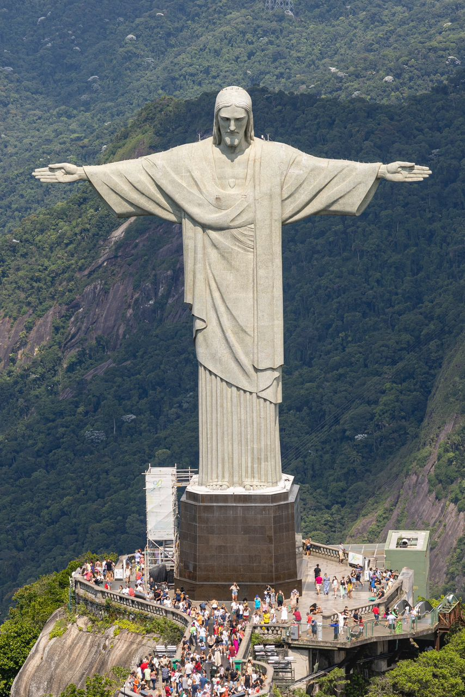

Le Christ Rédempteur
Présentation
Le Christ Rédempteur (en portugais : o Cristo Redentor) est une statue monumentale du Christ, dominant la ville de Rio de Janeiro au Brésil, du haut sur le mont Corcovado. Elle est devenue au fil des ans un des emblèmes de la ville reconnus internationalement, au même titre que le Pain de Sucre, la plage de Copacabana ou le carnaval . Elle a été conçue par l'ingénieur brésilien Heitor da Silva Costa, réalisée par le sculpteur français Paul Landowski et le sculpteur roumain Gheorghe Leonida, et érigée en collaboration avec l'ingénieur français Albert Caquot.Il fut inauguré le 12 Octobre 1931. Haut de 30 mètres, Le christ rédempteur domine la ville de Rio de Janeiro au Brésil.
Popularité et Influence
le Christ du Corcovado est l'un des endroits touristiques les plus fréquentés de Rio avec 750 000 visiteurs par an.
Titres
Il est classé monument historique depuis 1973 et déclaré patrimoine mondial de l'UNESCO en 2012.